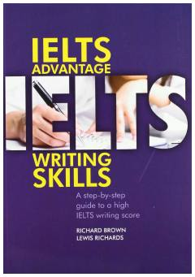

IAIELTS imtihonining Writing moduli uchun yuqori ball olishga mo'ljallangan qo'llanma.
Ushbu kitob talabalarga Akademik IELTS imtihonining Writing moduli bo'yicha yuqori ball (6.5-7.0 va undan yuqori) olishga yordam berish uchun mo'ljallangan qadam-baqadam qo'llanmadir. Qo'llanmada Task 1 va Task 2 topshiriqlarini bajarish uchun zarur bo'lgan lug'at boyligi, grammatika, matnni tuzish va g'oyalarni rivojlantirish usullari batafsil yoritilgan. Materiallar darslarda muvaffaqiyatli sinovdan o'tgan bo'lib, mustaqil o'rganish uchun ham juda qulay.